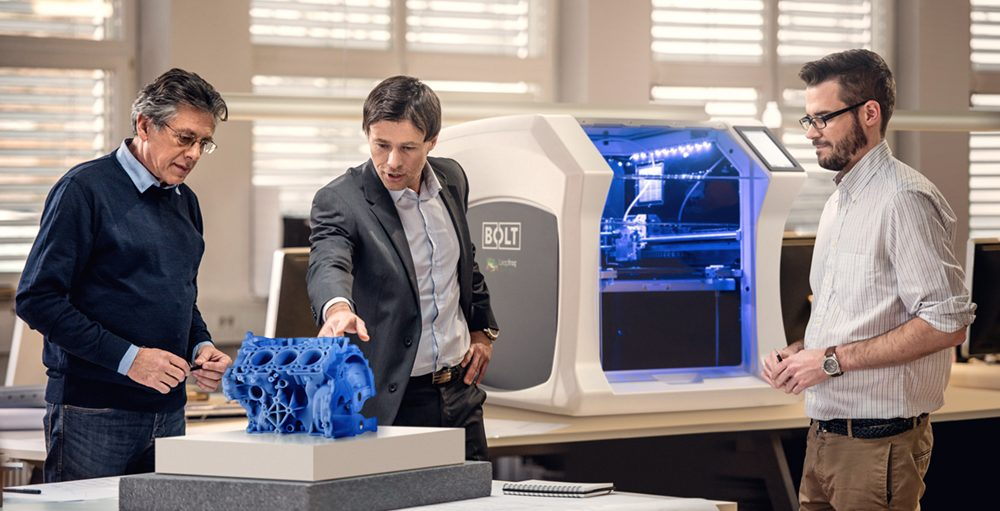

Профессия будущего




Востребовательные профессии на 10-15 лет
Согласно исследованиям, проведенным Московской школой управления «Сколково» и Агентством стратегических инициатив до 2030 года появятся 136 новых профессий. Рассмотрим некоторые из них.
Атлас новых профессий
Инженер 3D-печати
Специалист по трехмерному проектированию с применением математических и творческих способностей. Востребован в разных сферах, в том числе в архитектуре и строительстве, медицине, даже в производстве одежды и обуви.
Интернет-маркетолог
Большую часть дня мы проводим “в сети” читая новости на сайтах, обновляя ленту Инстаграм или общаясь с друзьями в мессенджерах. Бизнесу приходится перестраиваться и доносить до потребителя информацию через современные каналы связи. Для этого каждому бизнесу нужен интернет-маркетолог. Человек, который хорошо разбирается в различных видах интернет-рекламы, умеет построить воронку продаж, автоматизировать процессы и выстроить коммуникацию с клиентом онлайн будет востребован всегда!
Веб-разработчик
Перед тем как настраивать рекламу нужно подготовить площадку, на которую покупателя будут вести. В большинстве случаев такой площадкой является веб-сайт. Его разработкой занимается веб-разработчик. Это направление – сплав творческих и технических навыков. Вы можете заниматься только разработкой интерфейсов (фронтенд), либо программировать техническую составляющую (бэкэнд) или же создавать сайты на конструкторах. В 21 веке свой сайт нужен будет каждому бизнесу, поэтому без работы вы точно не останетесь.
Программист
Умение работать с кодом – навык, за который крупнейшие мировые компании готовы платить огромные деньги. За опытными программистами идет настоящая охота, а зарплаты часто достигают семизначных сумм! В ближайшие 10 лет ожидается большой спрос на разработчиков мобильных приложений под iOS и Android, это одна из самых востребованных профессии к 2025 году.
Разработчик моделей big data
Разработчик моделей big data - занимается проектированием систем сбора и обработки больших массивов данных, разработкой архитектуры данных, построением моделей данных в соответсвии с бизнес-процессами конкретной прикладной области или задачи
Проектировщик нейроинтерфейсов
Проектировщик нейроинтерфейсов – специалист, который занимается разработкой совместимых с нервной системой человека интерфейсов для управления компьютерами, домашними и промышленными роботами, с учетом психологии и физиологии пользователей.
Разработчик видеоигр
специалист, который разрабатывает программное обеспечение для видеоигр. Разработчик игр может работать самостоятельно и взять на себя все задания, а может трудиться и в большой специализированной компании с разделением обязанностей между сотрудниками.
Специалист по юзабилити (UX)
cпециалиста по юзабилити еще называют UX дизайнером или юзабилити инженером. Его главная задача –сделать так, чтобы продукт или программа были понятны и удобны для пользователя.